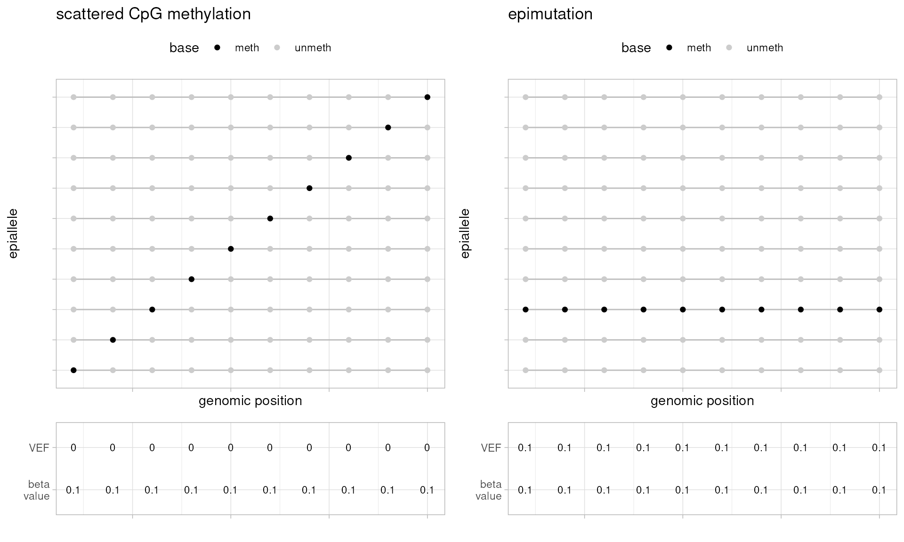
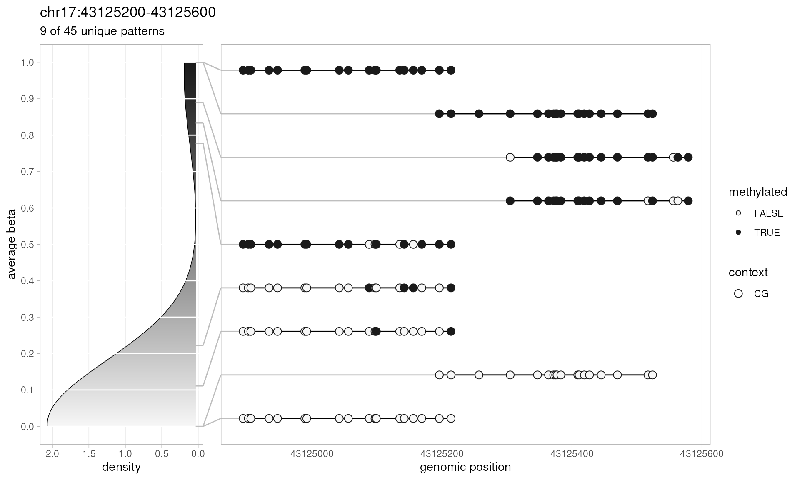
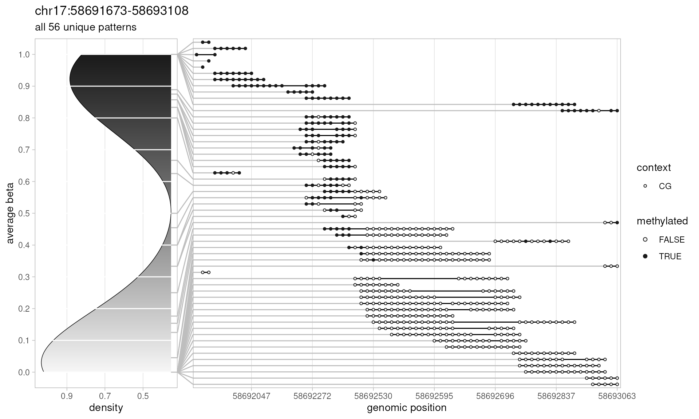
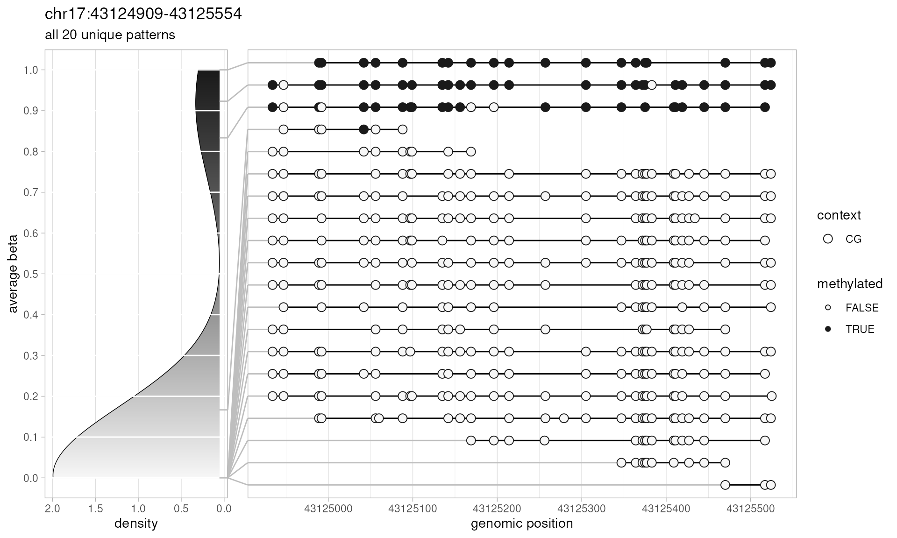
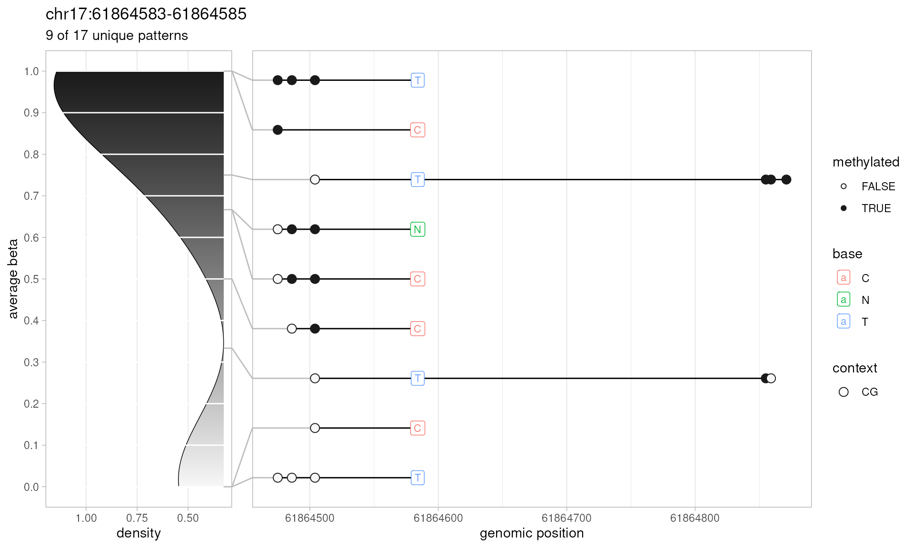
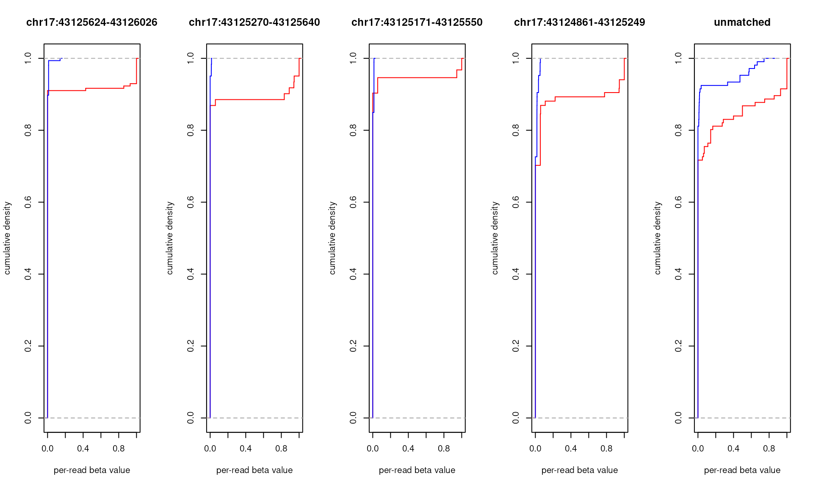
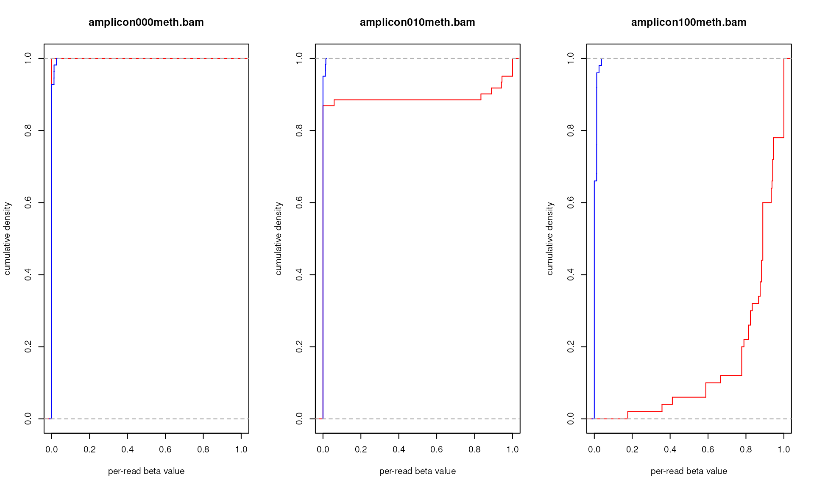

Abstract
A comprehensive guide to using the epialleleR package for analysis of next-generation sequencing data
Introduction
Cytosine DNA methylation is an important epigenetic mechanism for regulation of gene expression. Abnormal methylation is linked to several diseases, being for example the most common molecular lesion in cancer cell.1 Multiple studies suggest that alterations in DNA methylation, despite occurring at a low mosaic level, may confer increased risk of cancer later in life.2
Cytosine methylation levels within relatively narrow regions of the human genome are thought to be often concordant, resulting in a limited number of distinct methylation patterns of short sequencing reads.3 Due to the cell-to-cell variations in methylation, DNA purified from tissue samples contains a mix of hyper- and hypomethylated alleles with varying ratios that depend on the genomic region and tissue type.
Unsurprisingly, when the frequencies of hypermethylated epialleles
are low (e.g. 1e-02 and lower) and cytosine methylation levels are
averaged and reported using conventional algorithms, the identification
of such hypermethylated epialleles becomes nearly impossible. In order
to increase the sensitivity of DNA methylation analysis we have
developed epialleleR — an R package for calling
hypermethylated variant epiallele frequencies (VEF).
Two edge cases epialleleR was designed to distinguish are presented below (more examples can be found here). While these are simplified and entirely artificial, they still give an idea of two different methylation patterns that may exist in real life, be characterised by very similar quantitative metrics (beta value, the ratio of methylated cytosines, \(C\), to total number of cytosines, \(C+T\), per genomic position, i.e. \(\beta = \frac{C}{C+T}\)), but have entirely different biological properties: non-functional scattered methylation / technical artefacts on the left, and epigenetic gene inactivation on the right. VEF values, that are essentially the ratio of methylated cytosines in hypermethylated (above threshold) reads, \(C^a\), to total number of cytosines, \(C+T\), per genomic position, i.e. \(VEF = \frac{C^a}{C+T}\), clearly separate these cases and are thought to be more useful in detection and quantification of concordant methylation events.

epialleleR is a very fast, accurate, and
scalable solution for analysis of data obtained by next-generation
methylation/native sequencing of DNA samples. The minimum requirement
for the input is a Binary Alignment Map (BAM) file containing sequencing
reads. epialleleR works equally well with shallow,
deep or even ultra-deep sequencing data, obtained using narrowly
targeted gene panels (amplicon sequencing), larger methylation capture
panels, or even whole-genome approaches.
Current Features
- If methylation calls are not present in BAM file,
epialleleRcan make and store such calls in output BAM (similar to Bismark or Illumina’s mapping/alignment solutions; short-read sequencing alignments only) -
epialleleRcan create and store sample BAM files for testing purposes by means ofsimulateBammethod - In addition to conventional reporting of cytosine DNA methylation
levels (beta values),
epialleleRcan call variant epiallele frequencies (VEF) of hypermethylated alleles at the level of individual cytosines (generateCytosineReport) or supplied genomic regions (generateBedReport) - Linearised Methylated Haplotype Load (lMHL,
generateMhlReport) can be used instead of VEF when thresholding is not recommended (long-read sequencing) - DNA methylation patterns of genomic region of interest can be
explored using
extractPatternsandplotPatterns - The association of methylation with single-nucleotide variations
within epialleles can be tested using
generateVcfReport - Potential bimodality of methylation for genomic regions of interest
can be assessed using
generateBedEcdfmethod
Processing speed
Currently epialleleR runs in a single-thread
mode only. Reading/writing of BAM and FASTA data is now done by means of
HTSlib, therefore it is possible to speed it up
significantly using additional decompression threads
(nthreads option in
epialleleR methods). All operations are performed
using optimised C++ functions, and usually take reasonable time.
During methylation calling, human genome (hg38) loading usually takes 10-15 seconds. Using preloaded reference genome, the calling itself is performed at the speed of 200-300 thousand short reads (150 or 225 bases long) per second (25-40 MB/s of BAM data).
During methylation reporting, running time for complete task “BAM on disk -> CX report on disk” depends on the size of the BAM file, and the speed is usually within the range of 30-50 MB/s (or 250-400 thousand short reads per second) for a single core of a relatively modern CPU (Intel(R) Core(TM) i7-7700).
Major bottlenecks (in BAM loading and preprocessing) were removed in the release v1.2, full multithreading and minor improvements are expected in the future.
Reference-free processing
Unlike many other tools for methylation/modification reporting,
epialleleR does not require reference (genome)
sequence for the majority of analyses (all but methylation calling for
short-read methylation sequencing data, where it is absolutely
necessary). Cytosine methylation and its genomic context for both
short-read and long-read data are reported based on what is actually
observed in sequencing reads. The consequences (benefits and drawbacks)
of that are as follows:
- the reported numbers of modified and unmodified bases may differ from the output of other tools — although there is a noticeable inter-tool disagreement even for the tools that use reference genome sequence
- there might occur de novo cytosines and/or de novo genomic contexts as a result of, e.g., single-nucleotide variation or small indels — they are reported as long as they are observed in a majority of reads covering that position
- the potential drawback of slow processing is nivellated by very
efficient C/C++ code — even in a single-threaded mode,
epialleleRreports cytosine methylation not slower (often much faster) than, e.g., Bismark, Illumina DRAGEN, or Oxford Nanopore Technologies Modkit - small but noticeable increase in the accuracy of reported
methylation (see
epialleleRpublication) — which in case of the paired-end short-read data may be attributed not only to reference-free processing but also to quality-based read merging. When tested on a 5mC subset of Modkit validation data (s3://ont-open-data/modbase-validation_2024.10/), methylation frequencies (beta values) reported byepialleleRwere closer to the ground truth frequencies than the ones reported by Modkit, using the very same modification probability cutoffs (automatically determined by Modkit)
# long-read input data from s3://ont-open-data/modbase-validation_2024.10/
# explained at https://epi2me.nanoporetech.com/mod-validation-data/
# summarise methylation using Modkit
$ modkit pileup "5mC_rep1.bam" "5mC_rep1.cx.bedMethyl" -s 8 -t 8 --modified-bases 5mC --reference "all_5mers.fa"
> discarded 0 contigs with zero aligned reads
> parsed 1 base modification(s). Base modifictions other than 'C:m' will be counted as 'N_other'.
> adding single-base motif: 'C 0'
> attempting to sample 10042 reads
> Threshold of 0.66796875 for base C is low. Consider increasing the filter-percentile or specifying a higher threshold.
> Threshold of 0.6699219 for base A is low. Consider increasing the filter-percentile or specifying a higher threshold.
> using optimized workers for A,C all-context
> Done, processed 1537 rows.
$ modkit pileup "5mC_rep2.bam" "5mC_rep2.cx.bedMethyl" -s 8 -t 8 --modified-bases 5mC --reference "all_5mers.fa"
> discarded 0 contigs with zero aligned reads
> parsed 1 base modification(s). Base modifictions other than 'C:m' will be counted as 'N_other'.
> adding single-base motif: 'C 0'
> attempting to sample 10042 reads
> Threshold of 0.67578125 for base C is low. Consider increasing the filter-percentile or specifying a higher threshold.
> Threshold of 0.6738281 for base A is low. Consider increasing the filter-percentile or specifying a higher threshold.
> using optimized workers for A,C all-context
> Done, processed 1624 rows.
# compare in R
library(epialleleR)
library(data.table)
# summarize cytosine methylation using epialleleR with Modkit's thresholds
generateCytosineReport(
bam="5mC_rep1.bam", report.file="5mC_rep1.cx.tsv",
threshold.reads=FALSE, filter.reads=FALSE, cytosine.context="CX", report.context="CX",
min.mapq=0, min.baseq=0, min.prob=round(256*0.66796875), nthreads=4
)
generateCytosineReport(
bam="5mC_rep2.bam", report.file="5mC_rep2.cx.tsv",
threshold.reads=FALSE, filter.reads=FALSE, cytosine.context="CX", report.context="CX",
min.mapq=0, min.baseq=0, min.prob=round(256*0.67578125), nthreads=4
)
# load methylation summaries: true positive sites with methylation, by epialleleR, by Modkit
dt.tp <- fread("all_5mers_5mC_sites.bed", col.names=c("rname", "V2", "pos", "V4", "V5", "strand"))
dt.epi <- rbindlist(lapply(list(rep1="5mC_rep1.cx.tsv", rep2="5mC_rep2.cx.tsv"), fread), idcol="rep")
dt.modkit <- rbindlist(lapply(list(rep1="5mC_rep1.cx.bedMethyl", rep2="5mC_rep2.cx.bedMethyl"), fread,
col.names=c("rname", "V2", "pos", "V4", "cov", "strand", "V7", "V8", "V9",
"V10", "V11", "meth", "V13", "V14", "V15", "V16", "V17", "V18")), idcol="rep")
# combine all
dt.all <- merge.data.table(
merge.data.table(
dt.epi[, .(rep, rname, pos, strand, context, meth.epi=meth, cov.epi=meth+unmeth, beta.epi=meth/(meth+unmeth))],
dt.modkit[, .(rep, rname, pos, strand, meth.modkit=meth, cov.modkit=cov, beta.modkit=meth/cov)],
by=c("rep", "rname", "pos", "strand"), all=TRUE
),
dt.tp[, .(rname, pos, strand, TP=TRUE)], by=c("rname", "pos", "strand"), all=TRUE
)
# epialleleR beta values are higher for the majority of true positive sites
dt.all[TP==TRUE, as.list(table(beta.epi>beta.modkit)), by=rep]
# rep FALSE TRUE
# <char> <int> <int>
# 1: rep1 15 241
# 2: rep2 15 241
# and are lower for the majority of true negative sites
dt.all[is.na(TP), as.list(table(beta.epi<beta.modkit)), by=rep]
# rep FALSE TRUE
# <char> <int> <int>
# 1: rep1 525 739
# 2: rep2 634 727
# which then results in a slightly higher accuracy for epialleleR methylation reports
lapply(list(epialleleR="epi", modkit="modkit"), function (tool) {
TP <- as.numeric(sum(dt.all[TP==TRUE, get(paste0("meth.", tool))], na.rm=TRUE))
TN <- as.numeric(sum(dt.all[is.na(TP), get(paste0("cov.", tool))-get(paste0("meth.", tool))], na.rm=TRUE))
FP <- as.numeric(sum(dt.all[is.na(TP), get(paste0("meth.", tool))], na.rm=TRUE))
FN <- as.numeric(sum(dt.all[TP==TRUE, get(paste0("cov.", tool))-get(paste0("meth.", tool))], na.rm=TRUE))
ACC <- (TP+TN)/(TP+TN+FP+FN)
MCC <- (TP*TN-FP*FN)/sqrt((TP+FP)*(TP+FN)*(TN+FP)*(TN+FN))
c(accuracy=ACC, MCC=MCC)
})
# $epialleleR
# accuracy MCC
# 0.9787987 0.9464980
#
# $modkit
# accuracy MCC
# 0.9760796 0.9395759
# The accuracy is even higher when recommended values for mapping
# and base quality are used (min.mapq=30, min.baseq=13)
# $epialleleR
# accuracy MCC
# 0.9868576 0.9669984
#
# $modkit
# accuracy MCC
# 0.9760796 0.9395759 Sample data
The epialleleR package includes sample data,
which was obtained using targeted sequencing. The description of assays
and files is given below. All the genomic coordinates for external data
files are according to GRCh38 reference assembly.
Amplicon-based methylation NGS data
The samples of Human HCT116 DKO Non-Methylated (Zymo Research, cat # D5014-1), or Human HCT116 DKO Methylated (Zymo Research, cat # D5014-2) DNA,4 or their mix were bisulfite-converted, and the BRCA1 gene promoter region was amplified using four pairs of primers. Amplicons were mixed, indexed and sequenced at Illumina MiSeq system. The related files are:
| Name | Type | Description |
|---|---|---|
| amplicon000meth.bam | BAM | a subset of reads for non-methylated DNA sample |
| amplicon010meth.bam | BAM | a subset of reads for a 1:9 mix of methylated and non-methylated DNA samples |
| amplicon100meth.bam | BAM | a subset of reads for fully methylated DNA sample |
| amplicon.bed | BED | genomic coordinates of four amplicons covering promoter area of BRCA1 gene |
| amplicon.vcf.gz | VCF | a relevant subset of sequence variations |
| amplicon.vcf.gz.tbi | tabix | tabix file for the amplicon.vcf.gz |
Capture-based methylation NGS data
The tumour DNA was bisulfite-converted, fragmented and hybridized with custom-made probes covering promoter regions of 283 tumour suppressor genes (as described in 5). Libraries were sequenced using Illumina MiSeq system. The related files are:
| Name | Type | Description |
|---|---|---|
| capture.bam | BAM | a subset of reads |
| capture.bed | BED | genomic coordinates of capture target regions |
| capture.vcf.gz | VCF | a relevant subset of sequence variations |
| capture.vcf.gz.tbi | tabix | tabix file for the capture.vcf.gz |
Long-read native NGS data (adaptive sampling)
The blood DNA was fragmented, ligated with adapters, and sequenced using Oxford Nanopore PromethION P2 Solo system. Base calling and CpG cytosine modification analysis was performed in MinKNOW v25.09.16 using high accuracy model v5.2.0. The file is:
| Name | Type | Description |
|---|---|---|
| longread.bam | BAM | a subset of reads covering BRCA1 promoter area |
Manually creating sample BAM files
For the purposes of testing this package’s methods or other tools for
methylation calling and/or reporting, epialleleR
provides a convenient way to manually create sample BAM files by
specifying mandatory and optional BAM file tags. The following code will
create a small BAM file that contains methylation calls and can be used
for methylation reporting as described later:
bam.file <- tempfile(pattern="simulated", fileext=".bam")
simulateBam(output.bam.file=bam.file, XM=c("ZZzZZ", "zzZzz"), XG="CT")
#> Writing sample BAM [0.007s]
#> [1] 2
# one can view the resulting file using `samtools view -h <bam.file>`
# or, if desired, file can be converted to SAM using `samtools view`,
# manually corrected and converted back to BAMCheck simulateBam method help page for more
information on parameters and their default values. More examples that
use simulateBam can also be found in help pages
for generate*Report functions.
Typical workflow
Requirements
As mentioned earlier, epialleleR uses data
stored in Binary Alignment Map (BAM) files as its input and currently
allows to load both short-read (e.g., bisulfite or EM-seq) and long-read
(native) sequencing alignments. Specific requirements for these types of
data are given below. Additionally, please check the
preprocessBam function help file for a full
description of available parameters, as well as explanation of the
function’s logic.
Short-read sequencing
It is a prerequisite that records in the BAM file contain an XG tag with a genomic strand they map to (“CT” or “GA”), and an XM tag with the methylation call string — such files are produced by mapping and alignment tools such as Bismark Bisulfite Read Mapper and Methylation Caller or state-of-the-art Illumina solutions: Illumina DRAGEN Bio-IT Platform, Illumina Cloud analysis solutions, as well as contemporary Illumina sequencing instruments with on-board read mapping/alignment (NextSeq 1000/2000, NovaSeq X). These BAM files will contain all the necessary information and can be analysed without additional steps.
If BAM files were produced by other mapping/alignment tools (e.g.,
bwa-meth or BSMAP) and lack XG/XM data, it is possible to call
methylation using callMethylation method. This
method will add absent XG/XM tags and save all data in the output BAM
file that can be further analysed by
epialleleR.
Long-read sequencing
For preprocessing of long reads, epialleleR
requires presence of MM (Mm) and ML (Ml) tags that hold information on
base modifications and related probabilities, respectively. These are
standard tags described in SAM/BAM format specification, therefore
relevant tools for analysis and alignment of long sequencing reads
should be able to produce them.
Reading the data
All epialleleR methods can load BAM data using
the file path. However, if a file is very large and several reports need
to be prepared, it is advised to use the
preprocessBam convenience function as shown below.
This function is also used internally when a BAM file location string is
supplied as an input for other epialleleR
methods.
preprocessBam automatically determines if BAM
file contains paired- or single-end alignments and has all the necessary
tags (XM+XG, MM+ML) available. It is recommended to use
verbose processing and check messages for correct
identification of alignment endness. Otherwise, if the
paired parameter is set explicitly, exception (or
warning if override.check=TRUE) is thrown when
expected endness differs from the auto detected one.
During preprocessing of paired-end alignments, paired reads are
merged according to their base quality: nucleotide base with the highest
value in the QUAL string is taken, unless its quality is less than
min.baseq, which results in no information for
that particular position (“-”/“N”). These merged reads
are then processed as a single entity in all
epialleleR methods. Due to merging, overlapping
bases in read pairs are counted only once, and the base with the highest
quality is taken.
It is currently a requirement that paired-end BAM file must be sorted by QNAME instead of genomic location (i.e., “unsorted”) to perform merging of paired-end reads. Error message is shown if it is sorted by genomic location, in this case please sort it by QNAME using ‘samtools sort -n -o out.bam in.bam’.
During preprocessing of single-end alignments, no read merging is
performed. Only bases with quality of at least
min.baseq are considered. Lower base quality
results in no information for that particular position (“-”/“N”).
For RRBS-like protocols, it is possible to trim alignments from one
or both ends. Trimming is performed during BAM loading and will
therefore influence results of all downstream
epialleleR methods. Internally, trimming is
performed at the level of a template (i.e., read pair for paired-end BAM
or individual read for single-end BAM). This ensures that only necessary
parts (real ends of sequenced fragment) are removed for paired-end
sequencing reads.
It is also possible to load only a subset of reads (read pairs) of
interest or only fragments of such reads by supplying a list of targets
(see description of targets and other related
options in the help page for preprocessBam
function). Currently, the subsetting is performed without using BAM
index.
Specific considerations for long-read sequencing data:
Any location not reported is implicitly assumed to contain no modification.
According to SAM format specification, MM base modification tags are
allowed to list modifications observed not only on the original
sequenced strand (e.g., C+m) but also on the opposite
strand (e.g., G-m). The logic of their processing is as
follows (with the examples given below): * if an alignment record has no
methylation modifications (neither C+m, nor
G-m are present), this record is, naturally, considered to
be a single read with no cytosines methylated * if an alignment record
has C+m modification (base modifications on the original
sequenced strand), then this record is, naturally, considered to be a
single read with cytosine modifications on the sequenced strand * if an
alignment record has G-m modification (base modifications
on the strand opposite to sequenced), then this record is treated as two
reads, with the original sequenced strand having no modifications, while
the opposite strand having cytosine modifications * if both
C+m and G-m are present, then this record is
treated as two reads, with both strands having cytosine
modifications
library(epialleleR)
# short-read sequencing
capture.bam <- system.file("extdata", "capture.bam", package="epialleleR")
capture.bed <- system.file("extdata", "capture.bed", package="epialleleR")
bam.data <- preprocessBam(capture.bam, targets=capture.bed)
#> Checking BAM file: short-read, paired-end, name-sorted alignment detected
#> Reading BED file [0.033s]
#> Reading paired-end BAM file [0.020s]
generateCytosineReport(bam.data)
#> Filtering and thresholding reads [0.002s]
#> Preparing cytosine report [0.011s]
#> rname strand pos context meth unmeth
#> <fctr> <fctr> <int> <fctr> <int> <int>
#> 1: chr1 - 3067907 CG 1 0
#> 2: chr1 - 3067912 CG 1 0
#> 3: chr1 - 3067934 CG 1 0
#> 4: chr1 - 3067962 CG 1 0
#> 5: chr1 - 3067973 CG 1 0
#> ---
#> 15404: chrX + 136196775 CG 1 1
#> 15405: chrX - 136196776 CG 1 0
#> 15406: chrX + 136196793 CG 1 0
#> 15407: chrX - 136196794 CG 1 0
#> 15408: chrX + 136197192 CG 0 1
# long-read sequencing
longread.data <- preprocessBam(
system.file("extdata", "longread.bam", package="epialleleR"),
min.mapq=30, min.baseq=20, min.prob=178
)
#> Checking BAM file: long-read, single-end, unsorted alignment detected
#> Reading single-end BAM file [0.006s]
generateCytosineReport(longread.data, threshold.reads=FALSE)
#> Filtering reads [0.000s]
#> Preparing cytosine report [0.030s]
#> rname strand pos context meth unmeth
#> <fctr> <fctr> <int> <fctr> <int> <int>
#> 1: chr17 - 43115270 CG 1 0
#> 2: chr17 - 43115300 CG 1 0
#> 3: chr17 - 43115371 CG 1 0
#> 4: chr17 - 43115417 CG 1 0
#> 5: chr17 - 43115427 CG 1 0
#> ---
#> 903: chr17 + 43136994 CG 0 1
#> 904: chr17 + 43137174 CG 1 0
#> 905: chr17 + 43137332 CG 1 0
#> 906: chr17 + 43137364 CG 1 0
#> 907: chr17 + 43137391 CG 1 0
# Specifics of long-read alignment processing
out.bam <- tempfile(pattern="out-", fileext=".bam")
simulateBam(
seq=c("ACGCCATYCGCGCCA"),
Mm=c("C+m,0,2,0;G-m,0,0,0;"),
Ml=list(as.integer(c(102,128,153,138,101,96))),
output.bam.file=out.bam
)
#> Writing sample BAM [0.003s]
#> [1] 1
generateCytosineReport(out.bam, threshold.reads=FALSE, report.context="CX")
#> Checking BAM file: long-read, single-end, unsorted alignment detected
#> Reading single-end BAM file [0.002s]
#> Filtering reads [0.000s]
#> Preparing cytosine report [0.000s]
#> rname strand pos context meth unmeth
#> <fctr> <fctr> <int> <fctr> <int> <int>
#> 1: chrS + 2 CG 1 0
#> 2: chrS - 3 CG 1 0
#> 3: chrS + 4 CHH 0 1
#> 4: chrS + 5 CHH 0 1
#> 5: chrS + 9 CG 1 0
#> 6: chrS - 10 CG 1 0
#> 7: chrS + 11 CG 1 0
#> 8: chrS - 12 CG 1 0
#> 9: chrS + 13 CHH 0 1
#> 10: chrS + 14 CHH 0 1Optional calling of cytosine methylation
If short-read BAM file lacks XG/XM tags (e.g., is an output of bwa-meth or BSMAP), preprocessing will fail with the message that cytosine methylation calling must be performed. This can be done as follows:
# bwa-meth sample output
input.bam <- system.file("extdata", "test", "bwameth-se-unsort-yd.bam", package="epialleleR")
# resulting BAM with XG/XM tags
output.bam <- tempfile(pattern="output-", fileext=".bam")
# sample reference genome
genome <- preprocessGenome(system.file("extdata", "test", "reference.fasta.gz", package="epialleleR"))
#> Reading reference genome file [0.001s]
# calls cytosine methylation and stores it in the output BAM
# Input BAM has 100 records of which 73 are mapped to the genome
callMethylation(input.bam, output.bam, genome)
#> Making methylation calls [0.021s]
#> $nrecs
#> [1] 100
#>
#> $ncalled
#> [1] 73
# process this data further
# bam.data <- preprocessBam(output.bam)Making cytosine reports
epialleleR can generate conventional cytosine
reports in a format, which is similar to the genome-wide cytosine report
produced by the coverage2cytosine Bismark
module.6
Please note that generateCytosineReport
produces thresholded (VEF) report by default:
methylated cytosines from reads that do
not pass the threshold (hypomethylated
reads) are counted as being unmethylated. In order to
make a conventional cytosine report, use
threshold.reads=FALSE.
Also, by default, generateCytosineReport (as
well as generateBedReport,
generateVcfReport,
generateMhlReport) silently drops all reads that
have too few cytosines within the context or too high out-of-context
cytosine methylation (presumably, resulting from incomplete cytosine
conversion). To disable this behaviour, run the method with the
following parameters: filter.reads=FALSE.
Please note that the iltering is strongly recommended for short-read sequencing (bisulfite or enzymatic) because it removes reads from incompletely converted DNA molecules.
# data.table::data.table object for
# CpG VEF report
cg.vef.report <- generateCytosineReport(bam.data)
#> Filtering and thresholding reads [0.001s]
#> Preparing cytosine report [0.011s]
head(cg.vef.report[order(meth+unmeth, decreasing=TRUE)])
#> rname strand pos context meth unmeth
#> <fctr> <fctr> <int> <fctr> <int> <int>
#> 1: chr17 + 61864475 CG 8 8
#> 2: chr17 + 61864486 CG 10 6
#> 3: chr17 + 61864504 CG 9 7
#> 4: chr20 - 57267455 CG 13 1
#> 5: chr17 - 61863826 CG 0 13
#> 6: chr17 - 61863830 CG 0 13
# CpG cytosine report
cg.report <- generateCytosineReport(bam.data, threshold.reads=FALSE)
#> Filtering reads [0.001s]
#> Preparing cytosine report [0.011s]
head(cg.report[order(meth+unmeth, decreasing=TRUE)])
#> rname strand pos context meth unmeth
#> <fctr> <fctr> <int> <fctr> <int> <int>
#> 1: chr17 + 61864475 CG 8 8
#> 2: chr17 + 61864486 CG 10 6
#> 3: chr17 + 61864504 CG 10 6
#> 4: chr20 - 57267455 CG 13 1
#> 5: chr17 - 61863826 CG 0 13
#> 6: chr17 - 61863830 CG 0 13
# CX cytosine report
cx.report <- generateCytosineReport(bam.data, threshold.reads=FALSE,
report.context="CX")
#> Filtering reads [0.001s]
#> Preparing cytosine report [0.013s]
head(cx.report[order(meth+unmeth, decreasing=TRUE)])
#> rname strand pos context meth unmeth
#> <fctr> <fctr> <int> <fctr> <int> <int>
#> 1: chr17 + 61864338 CHG 1 25
#> 2: chr17 + 61864348 CHH 0 24
#> 3: chr17 + 61864364 CHH 0 24
#> 4: chr17 + 61864365 CHH 0 24
#> 5: chr17 + 61864373 CHH 0 24
#> 6: chr17 + 61864324 CHG 0 23Making VEF reports for a set of genomic regions
epialleleR allows to make reports not only for
individual cytosine bases, but also for a set of genomic regions. It is
especially useful when the targeted methylation sequencing was used to
produce reads (such as amplicon sequencing or hybridization capture
using, e.g., Agilent SureSelect Target Enrichment Probes).
The amplicon sequencing principally differs from capture-based assays
in that the coordinates of reads are known. Therefore, reads can be
assigned to amplicons by their exact positions, while to the capture
targets — by the overlap. For this, epialleleR
provides generic generateBedReport function as
well as two of its aliases, generateAmpliconReport
(for amplicon-based NGS) and generateCaptureReport
(for capture-based NGS).
# report for amplicon-based data
# matching is done by exact start or end positions plus/minus tolerance
amplicon.report <- generateAmpliconReport(
bam=system.file("extdata", "amplicon010meth.bam", package="epialleleR"),
bed=system.file("extdata", "amplicon.bed", package="epialleleR")
)
#> Reading BED file [0.008s]
#> Checking BAM file: short-read, paired-end, name-sorted alignment detected
#> Reading paired-end BAM file [0.005s]
#> Filtering and thresholding reads [0.000s]
#> Preparing amplicon report [0.015s]
amplicon.report
#> seqnames start end width strand amplicon nreads+ nreads- nfiltered VEF
#> <fctr> <int> <int> <int> <fctr> <char> <int> <int> <int> <num>
#> 1: chr17 43125624 43126026 403 * CpG00-13 0 155 1 0.08387097
#> 2: chr17 43125270 43125640 371 * CpG14-31 0 61 0 0.11475410
#> 3: chr17 43125171 43125550 380 * CpG17-34 0 93 0 0.05376344
#> 4: chr17 43124861 43125249 389 * CpG33-49 0 84 0 0.10714286
#> 5: <NA> NA NA NA <NA> <NA> 54 44 8 0.15306122
# report for capture-based data
# matching is done by overlap
capture.report <- generateCaptureReport(
bam=system.file("extdata", "capture.bam", package="epialleleR"),
bed=system.file("extdata", "capture.bed", package="epialleleR")
)
#> Reading BED file [0.008s]
#> Checking BAM file: short-read, paired-end, name-sorted alignment detected
#> Reading paired-end BAM file [0.011s]
#> Filtering and thresholding reads [0.001s]
#> Preparing capture report [0.015s]
head(capture.report)
#> seqnames start end width strand V4 nreads+ nreads- nfiltered VEF
#> <fctr> <int> <int> <int> <fctr> <char> <int> <int> <int> <num>
#> 1: chr1 3067647 3069703 2057 * PRDM16 2 1 0 1.0000000
#> 2: chr1 3651039 3653096 2058 * TP73 0 2 0 0.5000000
#> 3: chr1 3689153 3691202 2050 * TP73 0 2 0 1.0000000
#> 4: chr1 3696519 3698570 2052 * TP73 1 2 0 1.0000000
#> 5: chr1 6179609 6181670 2062 * CHD5 0 3 0 0.6666667
#> 6: chr1 13698869 13699064 196 * PRDM2 NA NA NA NA
# generateBedReport is a generic function for BED-guided reports
bed.report <- generateBedReport(
bam=system.file("extdata", "capture.bam", package="epialleleR"),
bed=system.file("extdata", "capture.bed", package="epialleleR"),
bed.type="capture"
)
#> Reading BED file [0.007s]
#> Checking BAM file: short-read, paired-end, name-sorted alignment detected
#> Reading paired-end BAM file [0.013s]
#> Filtering and thresholding reads [0.001s]
#> Preparing capture report [0.016s]
identical(capture.report, bed.report)
#> [1] TRUELinearized MHL reports
VEF values are extremely useful for detection of mosaic epimutations.
However, default thresholding parameters might not fit with the nature
of regions of interest. In this case, it is advised to learn the
characteristics of these regions with
extractPatterns and
generateBedEcdf methods as described below.
Alternatively, epialleleR provides a method to
calculate a metric that is similar to VEF in its ability to highlight
hypermethylated regions but does not require thresholding — linearised
Methylated Haplotype Load (lMHL).
lMHL is a modified version of MHL (MHL was first described by Guo et
al., 2017 7) sought to be faster and applicable for a
wider range of sequencing data. More information on this is given in the
help page for the generateMhlReport as well as in
the values vignette.
# lMHL report can be generated using
mhl.report <- generateMhlReport(
bam=system.file("extdata", "capture.bam", package="epialleleR")
)
#> Checking BAM file: short-read, paired-end, name-sorted alignment detected
#> Reading paired-end BAM file [0.013s]
#> Preparing lMHL report [0.018s]Exploring DNA methylation patterns
Individual epialleles can be extracted and plotted in order to
visualize methylation patters within a genomic region of interest. For
this, epialleleR provides methods
extractPatterns and
plotPatterns which can be used as follows:
# First, let's extract base methylation information for sequencing reads
# of 1:9 mix of methylated and non-methylated control DNA
patterns <- extractPatterns(
bam=system.file("extdata", "amplicon010meth.bam", package="epialleleR"),
bed=as("chr17:43125200-43125600","GRanges")
)
#> Checking BAM file: short-read, paired-end, name-sorted alignment detected
#> Reading paired-end BAM file [0.005s]
#> Extracting methylation patterns [0.019s]
# that many read pairs overlap genomic region of interest
nrow(patterns)
#> [1] 238
# now we can plot the most abundant them of them using default parameters
plotPatterns(patterns)
#> 238 patterns supplied
#> 45 unique
#> 9 most frequent unique patterns were selected for plotting using 10 beta value bins:
#> [0,0.1) [0.1,0.2) [0.2,0.3) [0.3,0.4) [0.4,0.5) [0.5,0.6) [0.6,0.7) [0.7,0.8) [0.8,0.9) [0.9,1]
#> 2 1 1 0 0 0 0 1 2 2
#> Warning: No shared levels found between `names(values)` of the manual scale and the data's
#> colour values.
# now let's explore methylation patterns in RAD51C gene promoter using
# methylation capture data
capture.patterns <- extractPatterns(
bam=system.file("extdata", "capture.bam", package="epialleleR"),
bed=as("chr17:58691673-58693108", "GRanges"),
verbose=FALSE
)
# let's plot all the patterns using discrete genomic scale
plotPatterns(capture.patterns, npatterns.per.bin=Inf,
genomic.scale="discrete", context.size=1)
#> 59 patterns supplied
#> 56 unique
#> 56 most frequent unique patterns were selected for plotting using 10 beta value bins:
#> [0,0.1) [0.1,0.2) [0.2,0.3) [0.3,0.4) [0.4,0.5) [0.5,0.6) [0.6,0.7) [0.7,0.8) [0.8,0.9) [0.9,1]
#> 22 3 1 2 3 1 2 0 11 11
#> Warning: No shared levels found between `names(values)` of the manual scale and the data's
#> colour values.
# patterns from long-read data
long.bam <- system.file("extdata", "longread.bam", package="epialleleR")
long.bed <- as("chr17:43124909-43125554", "GRanges")
long.data <- preprocessBam(
bam=long.bam, targets=long.bed, clip.to.targets=TRUE,
min.mapq=30, min.baseq=20, min.prob=178
)
#> Checking BAM file: long-read, single-end, unsorted alignment detected
#> Reading single-end BAM file [0.008s]
plotPatterns(
extractPatterns(bam=long.data, bed=long.bed),
npatterns.per.bin=Inf
)
#> Extracting methylation patterns [0.016s]
#> 20 patterns supplied
#> 20 unique
#> 20 most frequent unique patterns were selected for plotting using 10 beta value bins:
#> [0,0.1) [0.1,0.2) [0.2,0.3) [0.3,0.4) [0.4,0.5) [0.5,0.6) [0.6,0.7) [0.7,0.8) [0.8,0.9) [0.9,1]
#> 16 1 0 0 0 0 0 0 1 2
#> Warning: No shared levels found between `names(values)` of the manual scale and the data's
#> colour values.
Exploring sequence variants in epialleles
It is known that sequence variants can affect the methylation status
of a DNA.8 The generateVcfReport
function calculates frequencies of single nucleotide variants (SNVs)
within epialleles and tests for the association between SNV and
epiallelic status using Fisher Exact test. Base counts and the test’s
p-values are included in the returned value.
In addition to BAM file location string or preprocessed BAM object,
the function requires a location string for the Variant Call Format
(VCF) file or the VCF object that was obtained using
VariantAnnotation::readVcf function. As VCF files
can be extremely large, it is strongly advised to prefilter the VCF
object by the relevant set of genomic regions, or specify such relevant
set of regions as a bed parameter when
vcf points to a VCF file location.
Please note, that the output report is currently limited to SNVs
only. Also, the default (min.baseq=0) output of
generateVcfReport is equivalent to the one of
samtools mplieup -Q 0 ..., and therefore may result in
false SNVs caused by misalignments. Remember to increase
min.baseq (samtools mplieup -Q default value
is 13) to obtain results of a higher quality.
# VCF report
vcf.report <- generateVcfReport(
bam=system.file("extdata", "amplicon010meth.bam", package="epialleleR"),
bed=system.file("extdata", "amplicon.bed", package="epialleleR"),
vcf=system.file("extdata", "amplicon.vcf.gz", package="epialleleR"),
# higher thresholds on alignment and base quality
min.mapq=30, min.baseq=20,
# when VCF seqlevels are different from BED and BAM it is possible
# to convert them internally
vcf.style="NCBI"
)
#> Loading required namespace: VariantAnnotation
#> Loading required namespace: GenomeInfoDb
#> Reading BED file [0.021s]
#> Reading VCF file [0.766s]
#> Checking BAM file: short-read, paired-end, name-sorted alignment detected
#> Reading paired-end BAM file [0.005s]
#> Filtering and thresholding reads [0.000s]
#> Extracting base frequences [0.047s]
# NA values are shown for the C->T variants on the "+" and G->A on the "-"
# strands, because bisulfite conversion makes their counting impossible
head(vcf.report)
#> name seqnames range REF ALT nfiltered M+Ref U+Ref M-Ref U-Ref M+Alt U+Alt M-Alt
#> <char> <fctr> <int> <char> <char> <num> <num> <num> <num> <num> <num> <num> <num>
#> 1: rs546660277 chr17 43124874 A C 0 0 0 9 74 0 0 0
#> 2: rs574263814 chr17 43124891 G A 0 0 0 NA NA 0 0 NA
#> 3: rs8176076 chr17 43124935 G A 0 0 0 NA NA 0 0 NA
#> 4: rs535977743 chr17 43125016 C T 0 NA NA 9 72 NA NA 0
#> 5: rs191784032 chr17 43125050 C A 0 0 0 8 71 0 0 0
#> 6: rs111956204 chr17 43125083 C A 0 0 0 8 68 0 0 0
#> U-Alt SumRef SumAlt FEp+ FEp-
#> <num> <num> <num> <num> <num>
#> 1: 0 83 0 1 1
#> 2: NA 0 0 1 NA
#> 3: NA 0 0 1 NA
#> 4: 0 81 0 NA 1
#> 5: 1 79 1 1 1
#> 6: 0 76 0 1 1
# let's sort the report by increasing Fisher's exact test's p-values.
# the p-values are given separately for reads that map to the "+"
head(vcf.report[order(`FEp-`, na.last=TRUE)])
#> name seqnames range REF ALT nfiltered M+Ref U+Ref M-Ref U-Ref M+Alt U+Alt M-Alt
#> <char> <fctr> <int> <char> <char> <num> <num> <num> <num> <num> <num> <num> <num>
#> 1: rs546660277 chr17 43124874 A C 0 0 0 9 74 0 0 0
#> 2: rs535977743 chr17 43125016 C T 0 NA NA 9 72 NA NA 0
#> 3: rs191784032 chr17 43125050 C A 0 0 0 8 71 0 0 0
#> 4: rs111956204 chr17 43125083 C A 0 0 0 8 68 0 0 0
#> 5: rs55680227 chr17 43125086 A C 0 0 0 7 59 0 0 0
#> 6: rs539733232 chr17 43125088 C A 0 0 0 8 69 0 0 0
#> U-Alt SumRef SumAlt FEp+ FEp-
#> <num> <num> <num> <num> <num>
#> 1: 0 83 0 1 1
#> 2: 0 81 0 NA 1
#> 3: 1 79 1 1 1
#> 4: 0 76 0 1 1
#> 5: 0 66 0 1 1
#> 6: 0 77 0 1 1
# and to the "-" strand
head(vcf.report[order(`FEp+`, na.last=TRUE)])
#> name seqnames range REF ALT nfiltered M+Ref U+Ref M-Ref U-Ref M+Alt U+Alt M-Alt
#> <char> <fctr> <int> <char> <char> <num> <num> <num> <num> <num> <num> <num> <num>
#> 1: rs546660277 chr17 43124874 A C 0 0 0 9 74 0 0 0
#> 2: rs574263814 chr17 43124891 G A 0 0 0 NA NA 0 0 NA
#> 3: rs8176076 chr17 43124935 G A 0 0 0 NA NA 0 0 NA
#> 4: rs191784032 chr17 43125050 C A 0 0 0 8 71 0 0 0
#> 5: rs111956204 chr17 43125083 C A 0 0 0 8 68 0 0 0
#> 6: rs55680227 chr17 43125086 A C 0 0 0 7 59 0 0 0
#> U-Alt SumRef SumAlt FEp+ FEp-
#> <num> <num> <num> <num> <num>
#> 1: 0 83 0 1 1
#> 2: NA 0 0 1 NA
#> 3: NA 0 0 1 NA
#> 4: 1 79 1 1 1
#> 5: 0 76 0 1 1
#> 6: 0 66 0 1 1
# and finally, let's plot methylation patterns overlapping one of the most
# covered SNPs in the methylation capture test data set - rs573296191
# (chr17:61864584) in BRIP1 gene
brip1.patterns <- extractPatterns(
bam=system.file("extdata", "capture.bam", package="epialleleR"),
bed=as("chr17:61864583-61864585", "GRanges"),
highlight.positions=61864584,
verbose=FALSE
)
plotPatterns(brip1.patterns)
#> 24 patterns supplied
#> 17 unique
#> 9 most frequent unique patterns were selected for plotting using 10 beta value bins:
#> [0,0.1) [0.1,0.2) [0.2,0.3) [0.3,0.4) [0.4,0.5) [0.5,0.6) [0.6,0.7) [0.7,0.8) [0.8,0.9) [0.9,1]
#> 2 0 0 1 0 1 2 1 0 2
Plotting the distribution of per-read beta values
As stated in the introduction, human genomic DNA regions often show
bimodal methylation patterns. epialleleR allows to
visualize this information by plotting empirical cumulative distribution
functions (eCDFs) for within- and out-of-context beta values.
The code below produces plots for the sequencing reads of control DNA samples. Note that within-the-context eCDF(0.5) values are very close to the expected 1-VEF values for the corresponding control DNA samples:
- non-methylated DNA — expected VEF = 0, observed 1-eCDF(0.5) ≈ 0
- 1:9 mix of methylated and non-methylated DNA — expected VEF = 0.1, observed 1-eCDF(0.5) ≈ 0.1
- and fully methylated DNA — expected VEF = 1, observed 1-eCDF(0.5) ≈ 1
# First, let's visualise eCDFs for within- and out-of-context beta values
# for all four amplicons and unmatched reads. Note that within-the-context eCDF
# of 0.5 is very close to the expected 1-VEF value (0.1) for all amplicons
# produced from this 1:9 mix of methylated and non-methylated control DNA
# let's compute eCDF
amplicon.ecdfs <- generateBedEcdf(
bam=system.file("extdata", "amplicon010meth.bam", package="epialleleR"),
bed=system.file("extdata", "amplicon.bed", package="epialleleR"),
bed.rows=NULL
)
#> Reading BED file [0.008s]
#> Checking BAM file: short-read, paired-end, name-sorted alignment detected
#> Reading paired-end BAM file [0.005s]
#> Computing ECDFs for within- and out-of-context per-read beta values [0.008s]
# there are 5 items in amplicon.ecdfs, let's plot all of them
par(mfrow=c(1,length(amplicon.ecdfs)))
# cycle through items
for (x in 1:length(amplicon.ecdfs)) {
# four of them have names corresponding to genomic regions of amplicon.bed
# fifth - NA for all the reads that don't match to any of those regions
main <- if (is.na(names(amplicon.ecdfs[x]))) "unmatched"
else names(amplicon.ecdfs[x])
# plotting eCDF for within-the-context per-read beta values (in red)
plot(amplicon.ecdfs[[x]]$context, col="red", verticals=TRUE, do.points=FALSE,
xlim=c(0,1), xlab="per-read beta value", ylab="cumulative density",
main=main)
# adding eCDF for out-of-context per-read beta values (in blue)
plot(amplicon.ecdfs[[x]]$out.of.context, add=TRUE, col="blue",
verticals=TRUE, do.points=FALSE)
}
# Second, let's compare eCDFs for within-the-context beta values for only one
# amplicon but all three sequenced samples: pure non-methylated DNA, 1:9 mix of
# methylated and non-methylated DNA, and fully methylated DNA
# our files
bam.files <- c("amplicon000meth.bam", "amplicon010meth.bam",
"amplicon100meth.bam")
# let's plot all of them
par(mfrow=c(1,length(bam.files)))
# cycle through items
for (f in bam.files) {
# let's compute eCDF
amplicon.ecdfs <- generateBedEcdf(
bam=system.file("extdata", f, package="epialleleR"),
bed=system.file("extdata", "amplicon.bed", package="epialleleR"),
# only the second amplicon
bed.rows=2, verbose=FALSE
)
# plotting eCDF for within-the-context per-read beta values (in red)
plot(amplicon.ecdfs[[1]]$context, col="red", verticals=TRUE, do.points=FALSE,
xlim=c(0,1), xlab="per-read beta value", ylab="cumulative density",
main=f)
# adding eCDF for out-of-context per-read beta values (in blue)
plot(amplicon.ecdfs[[1]]$out.of.context, add=TRUE, col="blue",
verticals=TRUE, do.points=FALSE)
}
Other information
Citing the epialleleR package
Oleksii Nikolaienko, Per Eystein Lønning, Stian Knappskog, epialleleR: an R/Bioconductor package for sensitive allele-specific methylation analysis in NGS data. GigaScience, Volume 12, 2023, giad087, https://doi.org/10.1093/gigascience/giad087
The data underlying epialleleR manuscript
Replication Data for: “epialleleR: an R/BioC package for quantifying and analysing low-frequency DNA methylation”, https://doi.org/10.18710/2BQTJP
NCBI GEO dataset GSE201690: “Methylation analysis of promoter regions for selected tumour suppressor genes in DNA from white blood cells”, https://www.ncbi.nlm.nih.gov/geo/query/acc.cgi?acc=GSE201690
Our experimental studies that use the package
Per Eystein Lonning, Oleksii Nikolaienko, Kathy Pan, Allison W. Kurian, Hans Petter Petter Eikesdal, Mary Pettinger, Garnet L Anderson, Ross L Prentice, Rowan T. Chlebowski, and Stian Knappskog. Constitutional BRCA1 methylation and risk of incident triple-negative breast cancer and high-grade serous ovarian cancer. JAMA Oncology 2022. https://doi.org/10.1001/jamaoncol.2022.3846
Oleksii Nikolaienko, Hans P. Eikesdal, Elisabet Ognedal, Bjørnar Gilje, Steinar Lundgren, Egil S. Blix, Helge Espelid, Jürgen Geisler, Stephanie Geisler, Emiel A.M. Janssen, Synnøve Yndestad, Laura Minsaas, Beryl Leirvaag, Reidun Lillestøl, Stian Knappskog, Per E. Lønning. Prenatal BRCA1 epimutations contribute significantly to triple-negative breast cancer development. Genome Medicine 2023. https://doi.org/10.1186/s13073-023-01262-8. Data: GSE243966
Oleksii Nikolaienko, Garnet L Anderson, Rowan T Chlebowski, Su Yon Jung, Holly R Harris, Stian Knappskog, and Per E Lønning. MGMT epimutations and risk of incident cancer of the colon, glioblastoma multiforme, and diffuse large B-cell lymphomas. Clinical Epigenetics 2025. https://doi.org/10.1186/s13148-025-01835-x
Session Info
sessionInfo()
#> R version 4.6.1 (2026-06-24)
#> Platform: x86_64-pc-linux-gnu
#> Running under: Ubuntu 24.04.4 LTS
#>
#> Matrix products: default
#> BLAS: /usr/lib/x86_64-linux-gnu/openblas-pthread/libblas.so.3
#> LAPACK: /usr/lib/x86_64-linux-gnu/openblas-pthread/libopenblasp-r0.3.26.so; LAPACK version 3.12.0
#>
#> locale:
#> [1] LC_CTYPE=en_US.UTF-8 LC_NUMERIC=C LC_TIME=en_US.UTF-8
#> [4] LC_COLLATE=en_US.UTF-8 LC_MONETARY=en_US.UTF-8 LC_MESSAGES=en_US.UTF-8
#> [7] LC_PAPER=en_US.UTF-8 LC_NAME=C LC_ADDRESS=C
#> [10] LC_TELEPHONE=C LC_MEASUREMENT=en_US.UTF-8 LC_IDENTIFICATION=C
#>
#> time zone: UTC
#> tzcode source: system (glibc)
#>
#> attached base packages:
#> [1] stats graphics grDevices utils datasets methods base
#>
#> other attached packages:
#> [1] ggplot2_4.0.3 epialleleR_1.21.2
#>
#> loaded via a namespace (and not attached):
#> [1] tidyselect_1.2.1 dplyr_1.2.1 farver_2.1.2
#> [4] blob_1.3.0 Biostrings_2.81.8 S7_0.2.2
#> [7] bitops_1.1-0 fastmap_1.2.0 RCurl_1.98-1.20
#> [10] VariantAnnotation_1.59.4 GenomicAlignments_1.49.2 XML_3.99-0.24
#> [13] digest_0.6.39 lifecycle_1.0.5 KEGGREST_1.53.6
#> [16] RSQLite_3.53.3 magrittr_2.0.5 compiler_4.6.1
#> [19] rlang_1.3.0 sass_0.4.10 tools_4.6.1
#> [22] yaml_2.3.12 data.table_1.18.6.1 rtracklayer_1.73.0
#> [25] knitr_1.51 S4Arrays_1.13.0 labeling_0.4.3
#> [28] htmlwidgets_1.6.4 bit_4.6.0 curl_8.0.0
#> [31] DelayedArray_0.39.6 RColorBrewer_1.1-3 abind_1.4-8
#> [34] BiocParallel_1.47.0 withr_3.0.3 BiocGenerics_0.59.12
#> [37] desc_1.4.3 grid_4.6.1 stats4_4.6.1
#> [40] scales_1.4.0 SummarizedExperiment_1.43.0 cli_3.6.6
#> [43] rmarkdown_2.32 crayon_1.5.3 ragg_1.5.2
#> [46] generics_0.1.4 otel_0.2.0 httr_1.4.9
#> [49] rjson_0.2.23 BiocBaseUtils_1.15.1 DBI_1.3.0
#> [52] cachem_1.1.0 parallel_4.6.1 AnnotationDbi_1.75.2
#> [55] XVector_0.53.0 restfulr_0.0.17 matrixStats_1.5.0
#> [58] vctrs_0.7.3 Matrix_1.7-6 jsonlite_2.0.0
#> [61] IRanges_2.47.5 S4Vectors_0.51.9 bit64_4.8.6
#> [64] systemfonts_1.3.2 GenomicFeatures_1.65.0 jquerylib_0.1.4
#> [67] glue_1.8.1 pkgdown_2.2.1.9000 codetools_0.2-20
#> [70] gtable_0.3.6 GenomeInfoDb_1.49.1 UCSC.utils_1.9.0
#> [73] GenomicRanges_1.65.4 BiocIO_1.23.3 tibble_3.3.1
#> [76] pillar_1.11.1 htmltools_0.5.9 Seqinfo_1.3.2
#> [79] BSgenome_1.81.1 R6_2.6.1 textshaping_1.0.5
#> [82] evaluate_1.0.5 lattice_0.23-1 Biobase_2.73.2
#> [85] png_0.1-9 Rsamtools_2.29.0 cigarillo_1.3.1
#> [88] memoise_2.0.1 bslib_0.12.0 Rcpp_1.1.2
#> [91] SparseArray_1.13.2 xfun_0.60 fs_2.1.0
#> [94] MatrixGenerics_1.25.0 pkgconfig_2.0.3